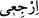

iddiâ eden sen misin?” diye sordu. O da “Evet” dedi. Bunun üzerine: “O zaman kendini
dağdan aşağı at, sonra da “Allah’ın takdîri buymuş.” de bakalım.” dedi. Îsâ (a.s.): “Ey
mel’un şeytan! Allah kullarını imtihan eder, kullar O’nu deneyemez. Kula gereken şey
tevekkül ve nîmetlere şükürdür.” dedi.
Allah’ın nîmetlerinden biri de “kün”, yani ol emriyle insanı adem (yokluk)
karanlığından vücûd (varlık) aydınlığına çıkartmasıdır. Allah Teâlâ bilir ki; kulların
tekrar ademe dönüşü kendiliklerinden olmadığı gibi kendilerine de bırakılmamıştır.
Nitekim, ademden çıkmaları da kendiliklerinden değildir. Çünkü onların varlık âlemine
ilk çıkışları “__WORD__” emrinin cezbesiyle olduğu gibi dönüşleri de “__WORD__”, yani dön
emrinin cezbesiyle olacaktır. Onlara gereken şey O’nun inâyet ve lütuflarının
cezbelerine kavuşmak için rızâsını talep yolunda emir ve nehiylerine uymak için gayret
ederek O’nun keremi ve fazlına güvenmektir.
[276]. Müslim, Zekât 108; Ebû Dâvud, Zekât 17, 27; İbn Mâce, Cihâd 41
[277]. Müsned, V, 172
[278]. Müsned, V, 181
[279]. Buhârî, Cuma 11; Müslim, İmâre 20; Ebû Dâvud, İmâre 1, 13p Tirmizî, Cihâd
27; Müsned, II, 5, 54, 55
[280]. Aclûnî, II, 239
[281]. Beyhakî, Delâil, III, 354